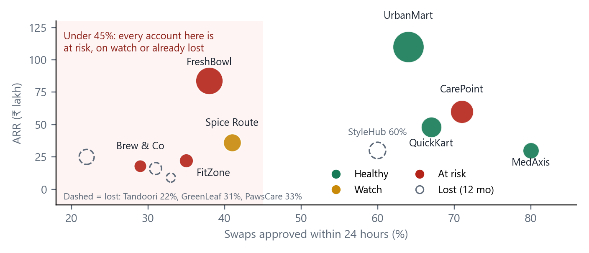
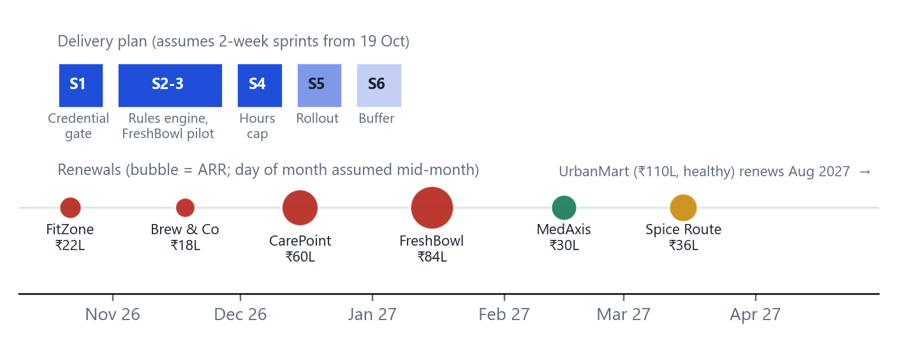

| Account | Asked for | Job to be done | Evidence |
|---|---|---|---|
| FreshBowl ₹84L · Jan 27 At risk | Swaps requested and approved on WhatsApp | A decision in minutes, with the same checks | 38% approved in 24 h. Staff agree a swap on WhatsApp in 10 minutes, then wait a day; half skip the app. The manager approves "almost all", checking only training and overtime. |
| CarePoint ₹60L · Dec 26 At risk | Block expired certificates | Same: an automatic control, not a manager's Excel | Audit found two shifts covered by lapsed BLS; one more finding means a penalty. Ask and need match. |
| UrbanMart ₹110L · Aug 27 Healthy | Regional approval above 48 h | Overtime control (9% of wage bill) without more approvals | The VP threatens to "look at options" if overtime rules do not ship. 36% of swaps already wait over a day: escalate exceptions only. |
The churn sits in shift-heavy accounts, and approval speed is the symptom. The four restaurant, cafe and gym accounts hold ₹160L (39% of ARR). All are at risk or on watch, with 29–41% approved in 24 h and managers spending 5.5–7 h a week on scheduling against 2.5–4 h elsewhere. Two of the four accounts we lost (₹41L, half of ₹80L) were restaurants. In total ₹220L, 54% of ARR, is at risk or on watch and renews by March 2027 (Fig. 1).

It is not WhatsApp. Only GreenLeaf (₹16L of ₹80L lost) left for a WhatsApp competitor, and its former head of operations says managers couldn't keep up and RotaPro auto-approved trained staff. Three of four lost accounts were at 22–33% on 24-hour approvals.
Approval is a rubber stamp that costs a day, not a manager-hours problem. A typical FreshBowl location sees about 24 swaps a month: 2–4 hours of approvals against about 28 hours of scheduling. The manager's "25–30 a night" (about 800 a month) is 34 times that, so I treat it as an outlier. Auto-approval buys speed and safety; building the roster is the bigger manager burden, a candidate for next quarter.
| Option | Sprints | Fixes approval delay | All 3 asks | Verdict |
|---|---|---|---|---|
| A. Build as asked: WhatsApp, UrbanMart custom, certificates | 6 | ○ Same approval, new screen | ● | No: no buffer, three code paths |
| B. Hard-code certificates, overtime, a simple auto-approve* | 5 | ◐ FreshBowl only | ● | No: each new ask costs a sprint |
| C. Rules engine: credential, hours, training as settings | 4 + 1 rollout | ● Auto-approve eligible | ● | Recommended: keeps a buffer |
| D. Certificate gate only, wait for estimates | 1 | ○ | ○ | No: FreshBowl, UrbanMart wait |
● strong, ◐ partial, ○ weak. *Unestimated; I assume 2 sprints.
| Sprint | Ships | For | Success check |
|---|---|---|---|
| S1 | Credential gate. Required credentials per role, with expiry, checked against the shift date. Blocks scheduling; swaps into an expired certificate cannot be approved. Expiry alerts. Admin-only override, logged. | CarePoint | Live early Nov. 14 days warn-only (flags, no block) while data loads, then enforced. CS loads their Excel. |
| S2–3 | Rules engine. Credential and training checks, auto-approval, exception queue, decision log, eligibility shown to staff. Estimate is mine, not Engineering's: about 2 sprints (range 1.5–3). At 3 the plan fits with no buffer. | FreshBowl pilot (5–10 stores) | ≥85% decided in 24 h (38% today). Hypothesis: about 80% auto-approved. |
| S4 | Hours-cap rule. A swap or extra shift that pushes someone past a weekly limit (UrbanMart: 48 h) goes to a designated approver. The limit is a setting. | UrbanMart | Live by 11 Dec. |
| S5–6 | Rollout, hardening, manager training. S6 is buffer, then the WhatsApp decision on pilot data. | All | No valid staff wrongly blocked. |

| CarePoint | Credential block ships early November for BLS and council registration. Send your credential list and name an Admin owner. This week, CS checks expiry dates against your sheet. |
| FreshBowl | Swaps that pass training and overtime checks are approved instantly; the rest reach the manager. Pilot from late November in stores you choose; WhatsApp is reviewed afterwards, with real numbers. |
| UrbanMart | The 48-hour rule arrives as a setting, targeted 11 December once Engineering confirms. We call your VP this week to agree the work week and the approvers. |
| Other accounts | Spice Route, MedAxis, QuickKart get the engine at rollout (S5). Spice Route (on watch) joins the second pilot wave; MedAxis benefits from the credential gate. |
| FitZone, Brew & Co | Renewals come first: CS calls this week, with a place in the pilot. Any commercial offer is your call. |
How we will know it works. North star: % of swaps decided in 24 h. Guardrails: valid staff wrongly blocked, overrides, wrong approvals. Main risks. FreshBowl renews on a WhatsApp checklist; bad credential data blocks valid staff; the engine runs past 3 sprints (mitigations in A4).
The stakes are real: UrbanMart is 27% of ARR and RotaPro is a credible competitor.
The data points elsewhere. GreenLeaf's former head of operations told us it wasn't WhatsApp: managers couldn't keep up with approvals, and RotaPro auto-approved trained staff. Three of four accounts we lost were at 22–33% on 24-hour approvals; our four weakest today sit at 29–41%. WhatsApp costs three of our six sprints and leaves the approval delay unchanged.
So we build one rules engine. UrbanMart's 48-hour rule becomes a setting, not a custom build, targeted for 11 December with half the effort. Their contract runs to August 2027, leaving eight months of proof before renewal. That is delivery this quarter, not a no.
Certificates aren't only a clinic issue. CarePoint's ₹60L renews in December after an audit finding, and the gate is one sprint. Diagnostics and gyms likely do too.
Two asks. Treat UrbanMart's "look at options" as a real threat to leave: join me on a call with their VP this week. We show how the 48-hour overtime rule ships by 11 December, and get their regional approvers' names. And join me on the FreshBowl call: auto-approval first, WhatsApp reviewed after the pilot.
The prototype is a single-file web app with no backend. It shows the new experience for four roles: staff and location manager on mobile, a regional approver, and Admin on the web. Pick FreshBowl, CarePoint or UrbanMart and follow a guided walkthrough: staff see who can take a shift before asking, the rules engine decides, and the right person is told. Managers see only exceptions. Admin edits rules, previews the effect on past requests, publishes, and overrides blocks with a logged reason. A release switch shows the product as of Sprint 1, 2–3 and 4+. A handoff tab holds the decision table, data model and open questions. It is plain HTML, CSS and JavaScript in one file, hosted on GitHub Pages; the rules engine is a single function.
AI: several tools, including ChatGPT and Claude, were used to cross-check the analysis, logic and code, alongside my own thinking and drafting. Chat links can't be shared; I'm happy to walk through the process.
A real version needs: a per-role credential model with expiry; versioned rules; weekly-hours logic (week boundary, leave, both sides of a swap); approver routing; decision and audit log; notifications; warn-only mode; feature flags and tests.
| Working prototype | https://hanvithsai.github.io/Shiftwell/ |
| Source and case files | https://github.com/hanvithSai/Shiftwell |
| AI chat link | Not shareable. Multiple AI tools were used for cross-validation; available to walk through in the interview. |
| Hypothesis | If true, we would see | What the data shows | Verdict |
|---|---|---|---|
| H1 Competitor feature gap (WhatsApp) | Lost accounts cite it; at-risk accounts ask for it | One of four losses (₹16L of ₹80L). GreenLeaf's exit call says it was approvals. Only FreshBowl's Ops Director asks. | Weak cause; real renewal risk |
| H2 Price or budget | Losses unrelated to usage quality | StyleHub (₹30L) and TandooriTown (₹25L) recorded by Sales, unverified. Tandoori sat at 22% approvals, the lowest, which looks like low perceived value. | Partial |
| H3 Value not delivered: slow manual approval | Low 24-hour approval wherever accounts are weak; heavy manager time | All four current accounts under 45% are at risk or watch. Three of four losses at 22–33%. Managers spend 5.5–7 h a week vs 2.5–4 h. | Supported |
| H4 Compliance gap in regulated roles | Audit findings; regulated segments churning | CarePoint audit finding on record. PawsCare returned to spreadsheets. Clinics and diagnostics are 22% of ARR. | Supported, narrow |
| Who | Job to be done | What they asked | Kind of need |
|---|---|---|---|
| CarePoint compliance head | When an auditor checks, I want proof that no unqualified person worked, so we avoid a penalty. | Block expired certificates | Must-be. Absence costs a penalty; presence earns no delight. |
| FreshBowl staff and manager | When I can't work a shift, I want it covered by someone qualified and settled fast, without chasing anyone. | WhatsApp approvals | Performance. Faster is better, on any channel. |
| FreshBowl Ops Director | When we renew, I want to be sure we are not behind the competition. | Parity. Expected because RotaPro has it. | |
| UrbanMart VP HR | When hours pass 48, I want to control cost without slowing the floor. | Approval above 48 h | Performance. Fewer overtime hours is better. |
| Candidate | Reach (ARR ₹L) | Confidence | Effort (sprints) | Score | Renewal pressure | Basis for confidence |
|---|---|---|---|---|---|---|
| Certificate gate | 60 | 80% | 1 | 48 | Dec 2026 | Audit finding on record; estimate given |
| Rules engine core | 160 | 60% | 2* | 48 | Jan–Mar 2027 | Pattern in four accounts, GreenLeaf exit, "approves almost all" quote |
| Hours-cap rule on engine | 110 | 70% | 1* | 77 | Aug 2027 | VP says he will look at alternatives if it does not ship |
| UrbanMart custom overtime | 110 | 70% | 2 | 39 | Aug 2027 | Same demand, but single-customer code |
| WhatsApp approvals | 84 | 30% | 3 | 8 | Jan 2027 | Contradicted by GreenLeaf; solves channel, not delay |
Score = Reach × Confidence ÷ Effort. Reach is ARR addressed, a proxy for value. Confidence and the starred efforts are my judgment (assumptions list). Pure scoring would put the hours rule first. I did not: it needs the engine, and the contract runs ten more months, so an 11 December delivery still leaves eight months of proof. Sequencing by cost of delay and dependency gives CarePoint (December), then the engine (FreshBowl in January), then the hours rule. The sales plan's biggest item, WhatsApp, scores lowest.
| Cause | Impact | Mitigation built into the plan |
|---|---|---|
| FreshBowl did not renew: the Ops Director judged us on a WhatsApp checklist. | ₹84L | Pilot numbers in his hands by mid-December. S6 is a decision gate for a notification-only WhatsApp version, if he makes it a condition. |
| The credential gate blocked valid staff, or left a clinic unstaffed. | ₹60L | 14 days warn-only while data is loaded. Admin-only override with a logged reason. |
| UrbanMart left or reopened pricing: the 48-hour rule slipped. | ₹110L | Date committed only after Engineering confirms. Executive call this week. Interim weekly list of staff above 48 h. If the engine slips, ship the cap as manager escalation first. |
| The engine ran past three sprints. | Pilot slips | Estimate checked with the lead next week. Fallback: ship the hours rule as manager escalation. S6 is buffer. |
| Auto-approval approved something it should not have. | Trust | Every decision logged with its reason. Unknown training goes to a person. Weekly sample review in the pilot. |
| Level | Metric | Target or trigger |
|---|---|---|
| North star | % of swaps decided within 24 hours | FreshBowl 38% today. Pilot hypothesis ≥85%. |
| Drivers | Share auto-approved; time in the exception queue | Hypothesis: about 80% auto-approved. |
| Guardrails | Valid staff wrongly blocked; overrides; wrong auto-approvals reported | Zero wrongly blocked after warn-only. |
| Outcome | Expired-credential shifts worked; overtime share of wage bill; renewals of at-risk ARR | Zero audit findings. Baselines first, then targets. |
| Horizon | Scope | Revisit trigger |
|---|---|---|
| Now | Credential gate, rules engine, hours-cap rule, rollout (S1–S5) | Plan as above. |
| Next | WhatsApp notifications for exceptions. Roster templates and auto-fill. | FreshBowl makes WhatsApp a renewal condition, or pilot queue times stay high. Manager scheduling time stays above 5 h a week in shift-heavy accounts. |
| Later | Credential document upload and verification. Multi-level approval hierarchy. | Demand from more than one account. |